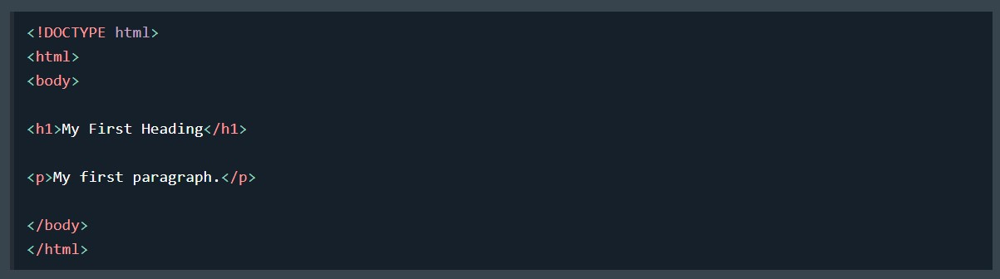
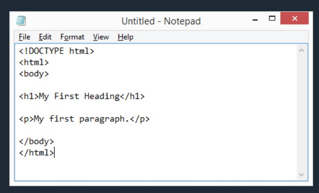
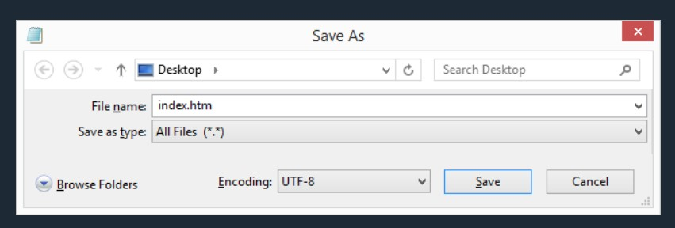
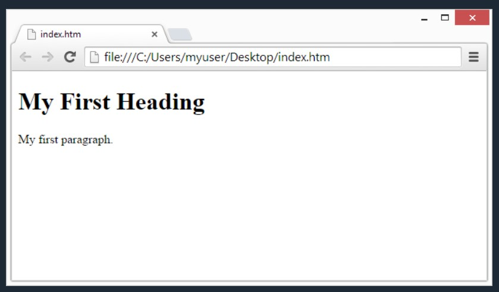
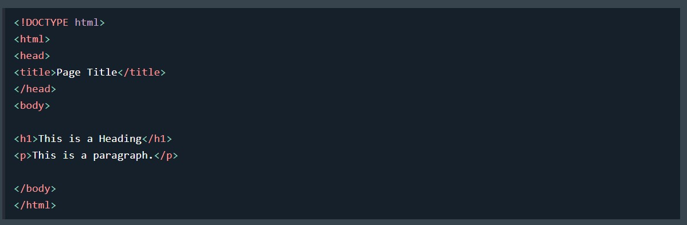

Editores de HTML
Para crear y editar documentos HTML, puedes usar cualquier editor de texto, como el Bloc de notas o TextEdit, o un editor profesional como Visual Studio Code, Sublime Text, o Atom.
Usar Notepad o TextEdit para Aprender HTML
Las páginas web se pueden crear y modificar usando editores HTML profesionales. Sin embargo, para aprender HTML, recomendamos usar un editor de texto simple como Notepad en PC o TextEdit en Mac.
Creemos que usar un editor de texto básico es una buena manera de aprender HTML. Sigue los siguientes pasos para crear tu primera página web:
Paso 1: Abre Notepad (PC)
En Windows 8 o versiones posteriores:
- Abre la Pantalla de Inicio (el símbolo de ventana en la esquina inferior izquierda de tu pantalla).
- Escribe "Notepad" en la barra de búsqueda.
En Windows 7 o versiones anteriores:
- Ve a Inicio > Programas > Accesorios > Notepad.
Paso 1: Abre TextEdit (Mac)
Abre Finder > Aplicaciones > TextEdit.
Cambia algunas preferencias para guardar los archivos correctamente:
- En Preferencias > Formato, elige "Texto Plano".
- En "Abrir y Guardar", marca la casilla que dice "Mostrar archivos HTML como código HTML en lugar de texto formateado".
Luego abre un nuevo documento para colocar el código.
Paso 2: Escribe un Código HTML Básico
Escribe o copia el siguiente código HTML en Notepad o TextEdit:
 Paso 3: Guarda la Página HTML
Guarda el archivo en tu computadora. Selecciona Archivo > Guardar como en el menú de Notepad o TextEdit.
Nombralo "index.htm" y selecciona la codificación UTF-8 (que es la codificación preferida para archivos HTML).
Consejo: Puedes usar la extensión .htm o .html para el archivo; no hay diferencia, depende de ti.
Paso 4: Visualiza la Página HTML en tu Navegador
Abre el archivo HTML guardado en tu navegador favorito (haz doble clic en el archivo, o haz clic derecho y elige "Abrir con").
El resultado se verá algo así:
Editor en Línea de W3Schools - "Prueba tú Mismo"
Con nuestro editor en línea gratuito, puedes editar el código HTML y ver el resultado en tu navegador.
Es una herramienta perfecta cuando quieres probar código rápidamente. También tiene codificación de colores y la posibilidad de guardar y compartir el código con otros.
Probar el Editor en Línea